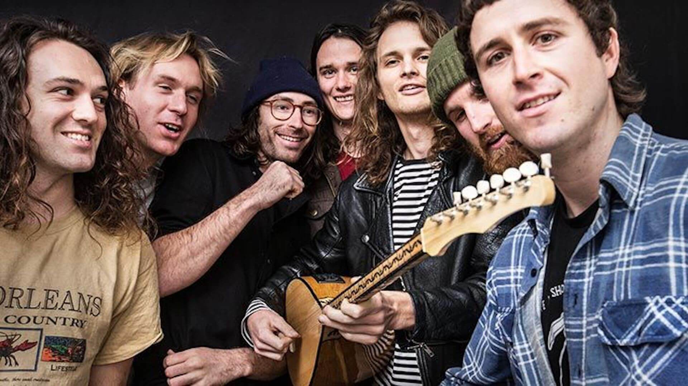
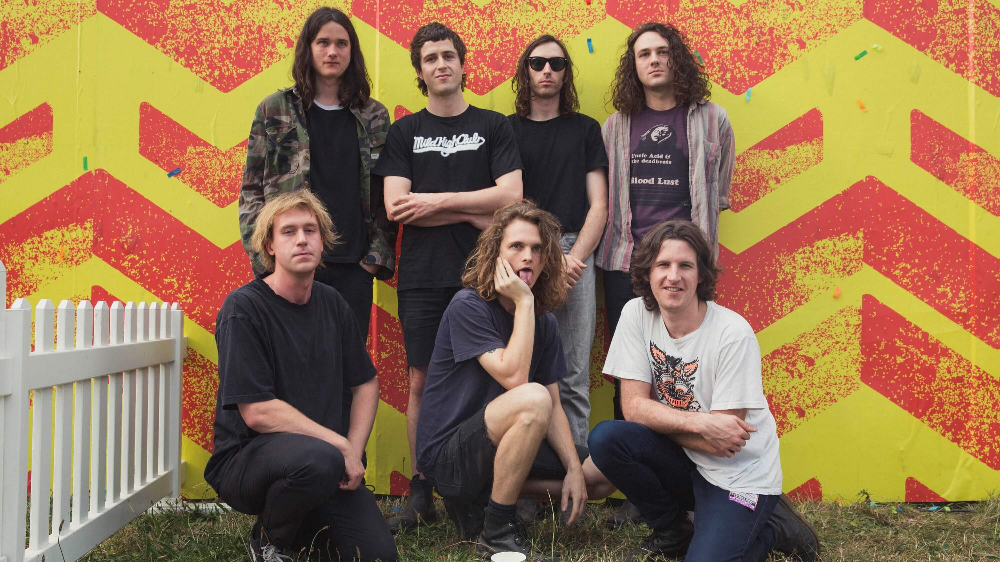
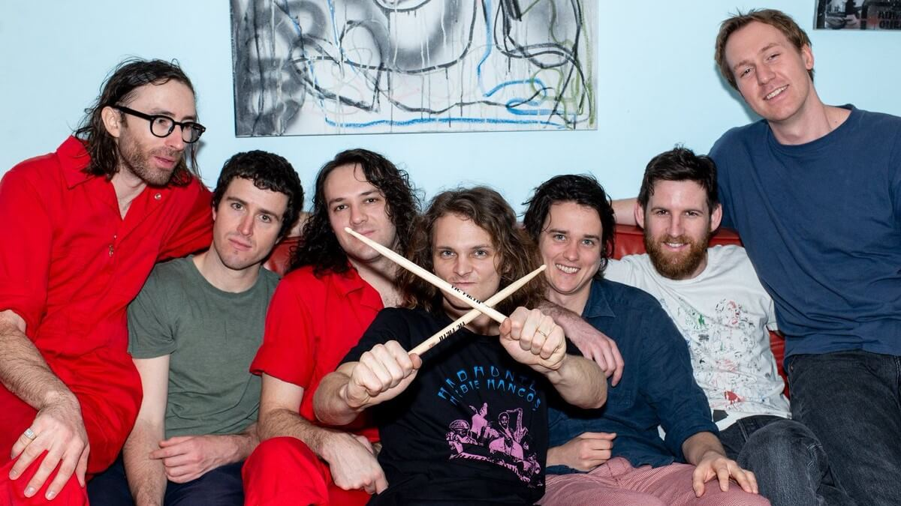

King Gizzard and the Lizard Wizard, also known as "Gizzard" "King Gizz" and "The Gizz", are an Australian rock band that originated back in 2010 over in Melbourne, Victoria.
They are very well known for bring back the classic psychedelic era of London back in the 60's into today's modern age, shipped over to the other side of the world.
They explore multiple genres, stage energetic live shows and building a prolific discography, having released seventeen studio albums, seven live albums, two compilations and two EPs.
They sure know how to deliver to their fans with musical entertainment, and have achieved eighteen awards in doing so.
Rock singer and songwriter who is recognized for having been the lead vocalist of the Melbourne, Australia-based psychedelic band King Gizzard & the Lizard Wizard. In addition to providing vocals, he's played guitar, flute, and keyboards.
Strangers call him Kenny, Ambrose Kenny-Smith is the keyboardist, harmonica player, and occasional vocalist of Australian psych-rock band "King Gizzard & The Lizard Wizard" and the frontman of King Gizzard’s Flightless label-mate "The Murlocs".
Joey Walker is a member of the Australian psychedelic rock band "King Gizzard and the Lizard Wizard", where he contributes guitar, bass, vocals, and occasional songwriting.
Cook Craig is mainly the Rhythmic guitar player of Australian Psychedelic/garage bands “King Gizzard & The Lizard Wizard” and “The Murlocs”, where also plays the bass guitar and keyboards.
Lucas Skinner is the main bassist of the progressive psychedelic band "King Gizzard & The Lizard Wizard" since their creation in 2010.
Michael (more appropriately known as ‘Cavs’) is one of the two drummers of the Australian psych-rock band "King Gizzard & the Lizard Wizard", formed in 2010.
Eric Moore is one of the seven members of the Australian psych-rock band "King Gizzard & the Lizard Wizard", formed in Melbourne in 2010. He is also one of the two drummers as well as the manager of the band.
Eric created his independent record label ‘Flightless Records’ in 2012, through which the band and accompanying friends release music. The solo record label was created so that the band had complete freedom to create and release music whenever and however they want to.